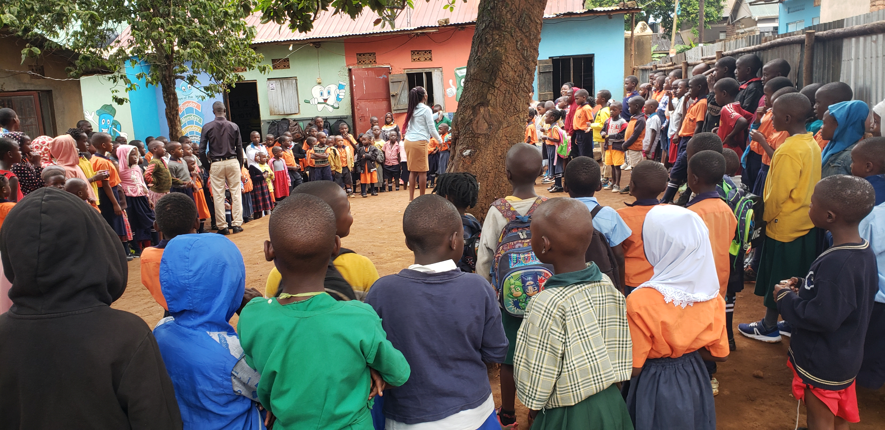

Empowering young minds for a brighter tomorrow.
Explore Our Programs
Heart for children primary school is a leading institution dedicated to academic excellence and character development. We nurture curiosity, creativity, and leadership through a balanced curriculum and supportive environment.